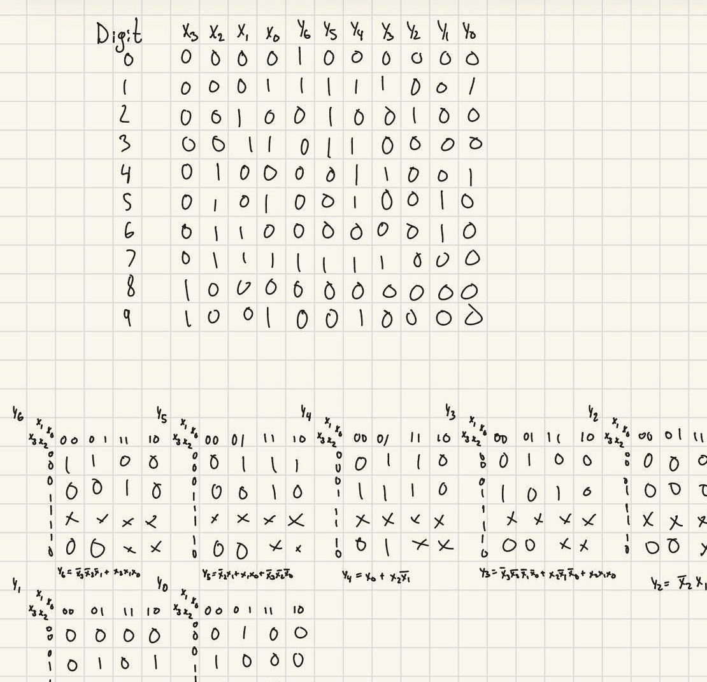
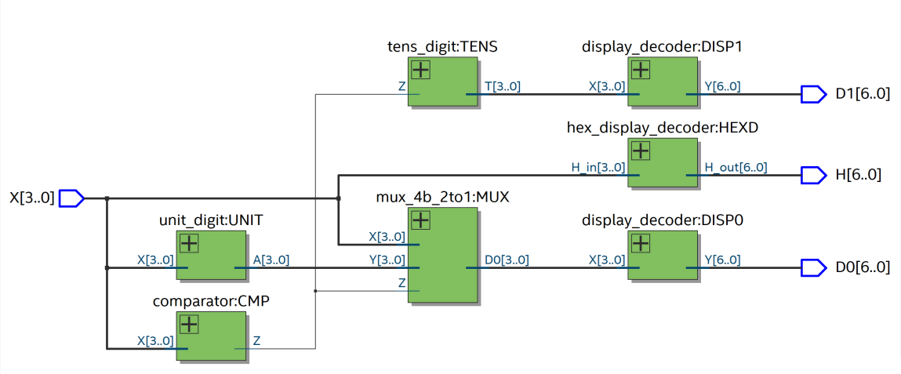
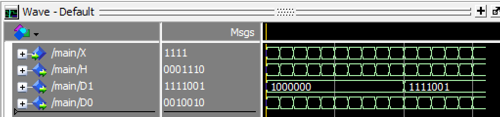

Projects / Binary-to-decimal and hexadecimal converter
Binary-to-decimal and hexadecimal converter
Digital Circuits and Systems, Lab 7, Oct 2026
A VHDL design that reads a 4-bit binary number and shows it on three seven-segment displays, as one hexadecimal digit and as a two-digit decimal number. It runs on an Intel MAX 10 FPGA on a DE10-Lite board.
- Input
- A 4-bit binary value X, from 0 to 15
- Outputs
- Three seven-segment displays: hexadecimal digit (H), decimal tens digit (D1), decimal units digit (D0)
- Tools
- VHDL, Quartus Prime, ModelSim
- Structure
- Six small modules combined in a top-level design
Problem
A 4-bit input has 16 values, 0 to 15. The hexadecimal display shows each one as a single digit, 0 through F. The decimal display needs two digits for the values 10 to 15, so the circuit has to split the value into a tens digit and a units digit. Each digit then has to be turned into the seven signals that drive a display.
Design
Seven-segment decoder
I started with the display. For each decimal digit I wrote out which of the seven segments must be on, then reduced each segment signal with a K-map. Inputs 10 to 15 never reach a decimal display, so I treated them as don't-cares to simplify the logic. The board's displays are active-low, so a 0 turns a segment on.

Splitting the value into digits
The tens digit is 1 when X is 10 or more, and 0 otherwise. A comparator detects that case. When X is 10 or more, the units digit is X minus 10, which needs only a few gates because X is at most 15. A 4-bit 2:1 multiplexer, controlled by the comparator, passes either X or the corrected value to the units display.
Z = X3·(X2 + X1) 1 when X is 10 or more T = 000Z tens digit A3 = 0 A2 = X2·X1 A1 = X2·X1' A0 = X0 A = X - 10 units = X when Z = 0, otherwise A
For example, X = 1101 (13) gives Z = 1, so the tens digit is 1. A = 0011, so the units digit is 3. The hexadecimal display decodes X directly and shows D.
Putting it together
The top-level design connects the modules by name, and the same display decoder drives both decimal digits, so it is used twice. Quartus's RTL viewer shows the result.

Testing
I simulated the top-level design in ModelSim for all 16 values of X. The tens-digit output changes from the code for 0 to the code for 1 when X reaches 10, as expected. At X = 1111 the outputs are 0001110 for H, 1111001 for D1, and 0010010 for D0. Those are the display codes for F, 1, and 5, so the displays read F in hexadecimal and 15 in decimal. I also programmed the design onto the DE10-Lite and checked it on the board.
